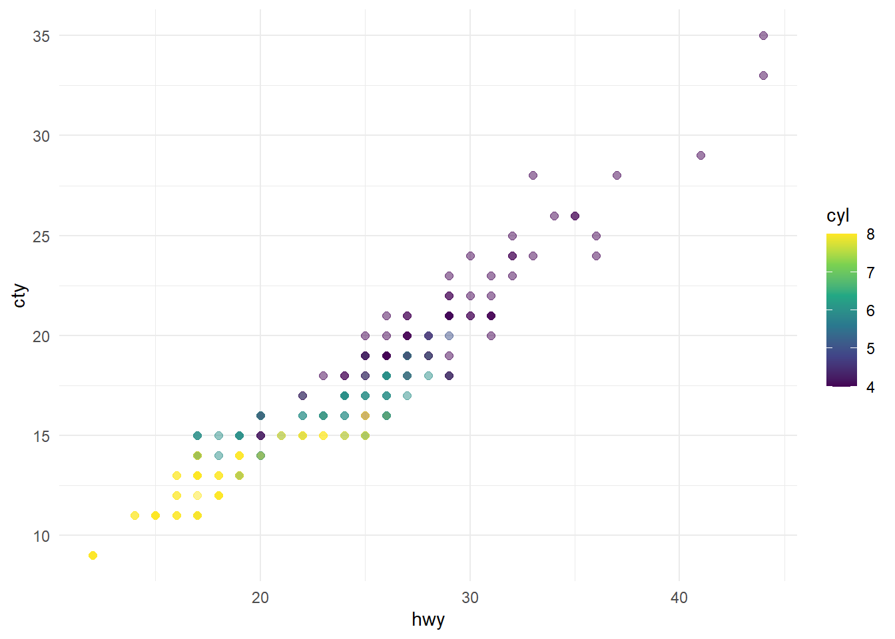

library(tidyverse)Melihat hubungan ekspor dan nilai tukar
Metode Penelitian Politeknik APP Jakarta
This just a showcase of what quarto docs can produce. I use this part for my students.
1 Pendahuluan
1.1 Latas belakang tugas
Tugas ini diberikan sebagai syarat kelulusan metopel. Mahasiswa ditugaskan memilih tema penelitian, mencari data, membuat visualisasi, dan melakukan analisis regresi. Mahasiswa juga diharuskan melakukan diskusi, menarik kesimpulan, dan menyampaikan kewaspadaan dari kesimpulan yang dapat ditarik dari metode analisis yang dipilih.
1.2 Latar belakang masalah
alasan memilih masalah ini (kenapa masalah ini menarik dan penting)
1.3 Pertanyaan
Laporan ini bermaksud untuk menjawab pertanyaan sebagai berikut:
- wkwkw
- wkwkkw
- wkwkwkwkkw
1.4 Package
packages yang digunakan antara lain sebagai berikut:
2 Data dan visualisasi
ggplot(mpg, aes(x = hwy, y = cty, color = cyl)) +
geom_point(alpha = 0.5, size = 2) +
scale_color_viridis_c() +
theme_minimal()
3 Analisis
Metode yang dipilih adalah regresi Autoregression dengan spesifikasi AR(1) sebagai berikut:
\[ y_{t}=\beta_0 + \beta_1 y_{t-1}+\mu_t \]
Hasil regresinya adalah
summary(lm(hwy~cty,data=mpg))
Call:
lm(formula = hwy ~ cty, data = mpg)
Residuals:
Min 1Q Median 3Q Max
-5.3408 -1.2790 0.0214 1.0338 4.0461
Coefficients:
Estimate Std. Error t value Pr(>|t|)
(Intercept) 0.89204 0.46895 1.902 0.0584 .
cty 1.33746 0.02697 49.585 <2e-16 ***
---
Signif. codes: 0 '***' 0.001 '**' 0.01 '*' 0.05 '.' 0.1 ' ' 1
Residual standard error: 1.752 on 232 degrees of freedom
Multiple R-squared: 0.9138, Adjusted R-squared: 0.9134
F-statistic: 2459 on 1 and 232 DF, p-value: < 2.2e-16Dapat dilihat dari tabel di atas bahwa ini bukan regresi AR(1). wkkwkwkwk.
4 Kesimpulan
Kesimpulannya, materinya belum selesai dibuat makanya bikin asal-asal dulu awokawokawok. Meskipun ga nyambung, jgn lupa baca riset Gupta (2022) yha.
References
Gupta, Krisna. 2022. “The Heterogenous Impact of Tariff and NTM on Total Factor Productivity of Indonesian Firms.” Journal Article. Bulletin of Indonesian Economic Studies, 1–29. https://doi.org/10.1080/00074918.2021.2016613.